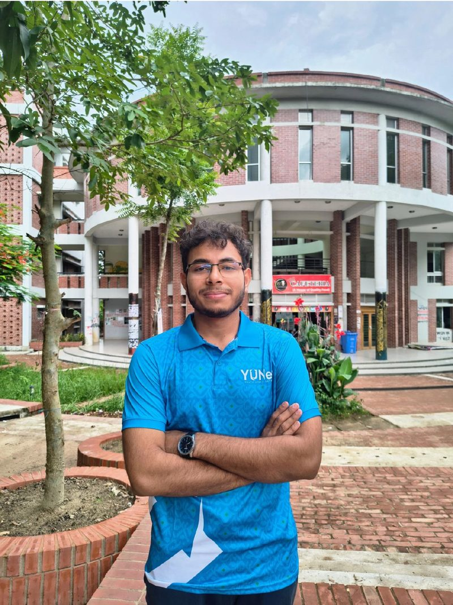

Current
Assistant Secretary (Male)
Stepped into a core executive role in the 8th Executive Committee — a new identity with a lot of responsibilities. Focus: leadership and presentation.
Roles where I get to organise, write, build and speak.
Stepped into a core executive role in the 8th Executive Committee — a new identity with a lot of responsibilities. Focus: leadership and presentation.

Wrote and managed web content for the chapter’s international-recognition year. Honoured with a Certificate of Appreciation and a Token of Appreciation (Website Team, Session 2025-26).
Leading technology, digital infrastructure, video editing and presentations for a CUET student startup — now 3+ years in the seat.

Represented YUNet at CUET and served as Core Organizer of the International Youth Upskill Summit 2025 (World Youth Skills Day).

Spread the bdapps platform across CUET and volunteered at the YUNet & bdapps stalls at Youth Startup Summit 2025, Chattogram Independent University.

For the 24th University Day of CUET, helped plan and run the chapter’s stall — from juniors to senior members, one team.